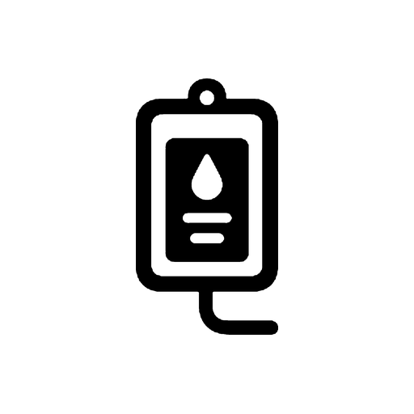

Gizlilik Politikası
Son güncelleme: 14 Eylül 2026
Cihazınızda kalan veriler
Şunlar yalnızca cihazınızda saklanır ve tarafımızca erişilemez:
- Kaydettiğiniz infüzyon protokolleri (ilaç adı, hacim, doz, hazırlanış, kullanım şekli, notlar)
- Hızlı değer listeleriniz (ağırlık, hacim, doz, akış hızı, süre)
- Tema ve dil tercihiniz
Bu veriler uygulamayı kaldırdığınızda cihazınızdan silinir. Cihaz yedeklemeniz açıksa yedeğinize dahil olabilir; o yedek bize değil, cihaz üreticinizin (Google veya Apple) hesabınıza aittir.
Girdiğiniz hasta ağırlığı, doz ve hacim değerleri hiçbir zaman cihazınızdan çıkmaz.
Android: reklamlar
Android sürümü Google AdMob aracılığıyla banner reklam gösterir. AdMob, reklam sunmak ve ölçmek için şunlara erişebilir:
- Reklam kimliği (sıfırlanabilir reklam kimliği)
- Cihaz ve uygulama etkileşim bilgileri (reklamın görüntülenmesi, tıklanması)
- Yaklaşık konum (IP tabanlı, ülke/şehir düzeyinde)
Bu veriler Google tarafından işlenir: Google'ın ortak sitelerdeki veri kullanımı.
Avrupa Ekonomik Alanı, Birleşik Krallık ve İsviçre'deki kullanıcılara uygulama ilk açılışta bir onay formu gösterir (Google User Messaging Platform). Kişiselleştirilmiş reklamları reddedebilirsiniz; uygulamanın tüm işlevleri onaydan bağımsız çalışır.
Reklam kimliğinizi sıfırlamak veya kişiselleştirilmiş reklamları kapatmak için: Ayarlar → Google → Reklamlar.
iOS: veri toplanmaz
iOS sürümünde reklam yoktur, ağ erişimi yoktur ve hiçbir veri toplanmaz. App Store gizlilik etiketinde bu "Veri Toplanmıyor" olarak beyan edilmiştir.
Analitik ve çökme raporu
Uygulama ayrı bir analitik veya çökme raporlama SDK'sı içermez. Uygulamayı mağazadan kurduysanız Google Play veya Apple, toplu ve anonim çökme istatistikleri sağlayabilir; bu veriye kimlik bilgisi olmadan erişilir.
Çocuklar
Uygulama sağlık personeline yöneliktir, çocuklara yönelik değildir ve çocuklardan bilerek veri toplamaz.
Tıbbi sorumluluk reddi
Bu uygulama bir hesaplama aracıdır; tıbbi tavsiye vermez ve klinik kararın yerine geçmez. Hesaplanan değerler uygulanmadan önce hekim orderı ve kurum protokolüyle karşılaştırılmalıdır. Sorumluluk kullanıcıya aittir.
Değişiklikler
Bu politika değişirse bu sayfa güncellenir ve yukarıdaki tarih değiştirilir.
İletişim
Sorularınız için destek sayfasına bakın.